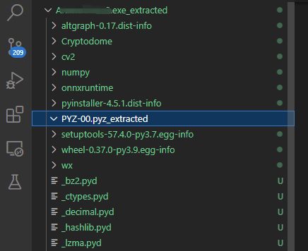
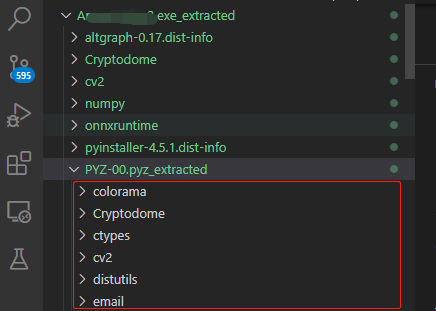
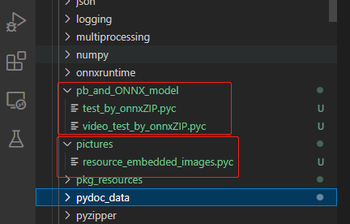
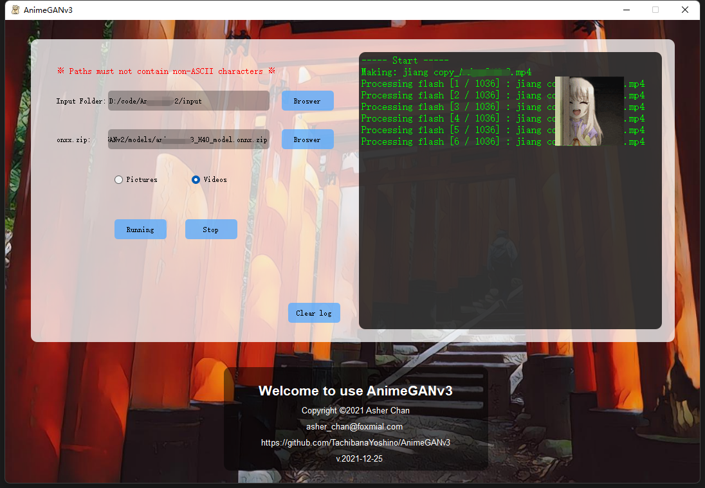

PyInstaller 程序逆向
在网络上看到一个神经网络将图片转动漫风格的库，但是作者并没有公布最新版的源码。下载试用后发现软件功能挺好，但是在图片转换时会卡死主界面。看Issues 时，网友提到可以通过逆向工程提取*.onxx.zip 文件的解压密码。在提取密码的同时，发现也能看到部分源码，于是想着也许可以自己动手修复一下。
通过pyinstxtractor 解包
首先在Github 下载pyinstxtractor.py 文件，并通过一下命令将可执行程序解包：
> python.exe .\pyinstxtractor.py .\A___.exe
[+] Processing .\A___.exe
[+] Pyinstaller version: 2.1+
[+] Python version: 3.7
[+] Length of package: 66541612 bytes
[+] Found 166 files in CArchive
[+] Beginning extraction...please standby
[+] Possible entry point: pyiboot01_bootstrap.pyc
[+] Possible entry point: pyi_rth_pkgutil.pyc
[+] Possible entry point: pyi_rth_inspect.pyc
[+] Possible entry point: pyi_rth_multiprocessing.pyc
[+] Possible entry point: pyi_rth_pkgres.pyc
[+] Possible entry point: home.pyc
[!] Warning: This script is running in a different Python version than the one used to build the executable.
[!] Please run this script in Python 3.7 to prevent extraction errors during unmarshalling
[!] Skipping pyz extraction
[+] Successfully extracted pyinstaller archive: .\A___.exe
You can now use a python decompiler on the pyc files within the extracted directory需要注意的是，解包的Python 版本应该与打包时的Python 版本一致，如Python 3.7 打包的程序，就应该使用Python 3.7 解包。不然会发现解包后PYZ-00.pyz_extracted 文件夹内没有文件：

因为pyinstxtractor.py 不依赖外部包，所以可以直接下载免安装版的Python 3.7 解包：
> .\python\python37.exe .\pyinstxtractor.py .\A___.exe
[+] Processing .\A___.exe
[+] Python version: 3.7
[+] Length of package: 66541612 bytes
[+] Found 166 files in CArchive
[+] Beginning extraction...please standby
[+] Possible entry point: pyiboot01_bootstrap.pyc
[+] Possible entry point: pyi_rth_pkgutil.pyc
[+] Possible entry point: pyi_rth_inspect.pyc
[+] Possible entry point: pyi_rth_multiprocessing.pyc
[+] Possible entry point: pyi_rth_pkgres.pyc
[+] Possible entry point: home.pyc
[+] Found 386 files in PYZ archive
[+] Successfully extracted pyinstaller archive: .\A___.exe
You can now use a python decompiler on the pyc files within the extracted directory以Python 3.7 解包，可以发现PYZ-00.pyz_extracted 内部有了很多条目，其中就包含许多.pyc 文件，其中就包含关键逻辑的代码：

通过uncompyle6 逆向.pyc 文件
uncompyle6 无需指定Python 的版本，但是需要提前安装：
> pip install uncompyle6下图中，红框中的内容就是我们所需要逆向的代码逻辑和图片资源，至于怎么找到的（目前我还是看名字猜的）：

逆向代码逻辑
> uncompyle6.exe \
> .\A___.exe_extracted\PYZ-00.pyz_extracted\pb_and_ONNX_model\video_test_by_onnxZIP.pyc \
> > video.py通过上面的命令，就可以将video_test_by_onnxZIP.pyc 内部的代码逻辑提取出来，以下仅展示部分代码：
# uncompyle6 version 3.8.0
# Python bytecode 3.7.0 (3394)
# Decompiled from: Python 3.8.10 (tags/v3.8.10:3d8993a, May 3 2021, 11:48:03) [MSC v.1928 64 bit (AMD64)]
# Embedded file name: pb_and_ONNX_model\video_test_by_onnxZIP.py
import onnxruntime as ort, time, os, cv2, numpy as np
v_form = ['.mp4', '.MP4', '.avi', '.AVI']
from glob import glob
import pyzipper
from tqdm import tqdm
os.environ['CUDA_VISIBLE_DEVICES'] = '-1'
# 更多代码逻辑逆向资源文件
> uncompyle6.exe \
> .\A___.exe_extracted\PYZ-00.pyz_extracted\pictures\resource_embedded_images.pyc \
> > pic.py通过上面的命令，就可以将video_test_by_onnxZIP.pyc 内部的代码逻辑提取出来，以下仅展示部分代码：
# uncompyle6 version 3.8.0
# Python bytecode 3.7.0 (3394)
# Decompiled from: Python 3.8.10 (tags/v3.8.10:3d8993a, May 3 2021, 11:48:03) [MSC v.1928 64 bit (AMD64)]
# Embedded file name: pictures\resource_embedded_images.py
from wx.lib.embeddedimage import PyEmbeddedImage
a13__jpg = PyEmbeddedImage(b'iVBORw**Base64 Code**QmCC')
a3__ico = PyEmbeddedImage(b'iVBORw0K**********Jggg==')
# okay decompiling .\AnimeGANv3.exe_extracted\PYZ-00.pyz_extracted\pictures\resource_embedded_images.pyc并且通过下面的代码可以将图片资源重新保存到本地：
a13__jpg.GetImage().SaveFile('bg.jpg') # 变量的后缀名就是文件的后缀名
a3__ico.GetImage().SaveFile('ico.jpg') 重建应用
参考PySide2 学习笔记，做出以下改动：
- 通过多线程和信号量重建应用，避免应用假死；
- 并且通过Qt Designer 重绘界面；
- 新增任务中断的功能。
待提高的部分：
- 日志滚动条样式优化。
